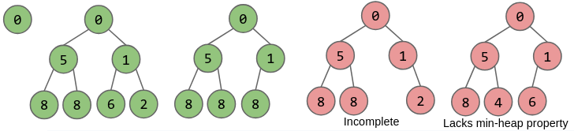

Priority Queues
Table of Contents
1. Priority Queue Interface
/** (Min) Priority Queue: Allowing tracking and removal of the
* smallest item in a priority queue. */
public interface MinPQ<Item> {
/** Adds the item to the priority queue. */
public void add(Item x);
/** Returns the smallest item in the priority queue. */
public Item getSmallest();
/** Removes the smallest item from the priority queue. */
public Item removeSmallest();
/** Returns the size of the priority queue. */
public int size();
}
This is an interface for a minimum priority queue, which is a queue that keeps track of the smallest item (the item with the highest “priority”).
2. Implementations
Here are some data structures we can use to implement MinPQ, and their efficiency:
| Ordered Array | Balanced BST | Hash Table | Heap | |
|---|---|---|---|---|
add |
\(\Theta (N)\) | \(\Theta (\log N)\) | \(\Theta (1)\) | \(\Theta (\log N)\) |
getSmallest |
\(\Theta (1)\) | \(\Theta (\log N)\) | \(\Theta (N)\) | \(\Theta (1)\) |
removeSmallest |
\(\Theta (N)\) | \(\Theta (\log N)\) | \(\Theta (N)\) | \(\Theta (\log N)\) |
A BST would work, but we need to keep them balanced and duplicates are complex to handle.
2.1. Heap
Instead, we can use a binary min-heap: it is a binary tree that is complete and obeys the min-heap property. Min-heap means that every node is less than or equal to both of its children, and complete means that missing items are only at the bottom level, and all nodes are as far left as possible:

getSmallest is easy for a heap: we just return the root of the tree, which is guaranteed to be the smallest.
Adding to a heap is slightly harder. However, realize that we can always just add the node to the next available spot in the heap, and then swap upwards until the min-heap property is satisfied:
We can also delete the smallest item by swapping the last item in the heap to the root, and then sinking that item down the hierarchy, yielding to the most qualified nodes (the smallest of the two children), until the min-heap property is satisfied: